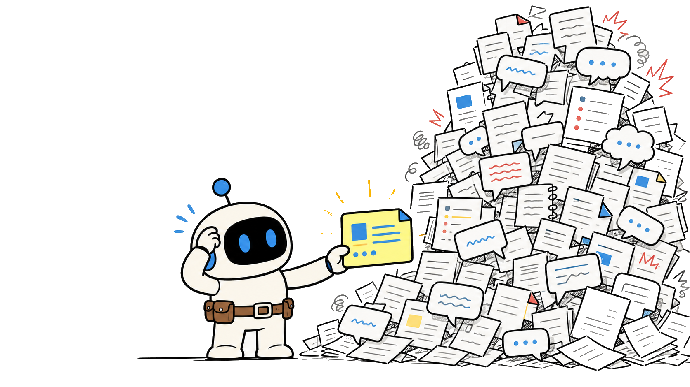
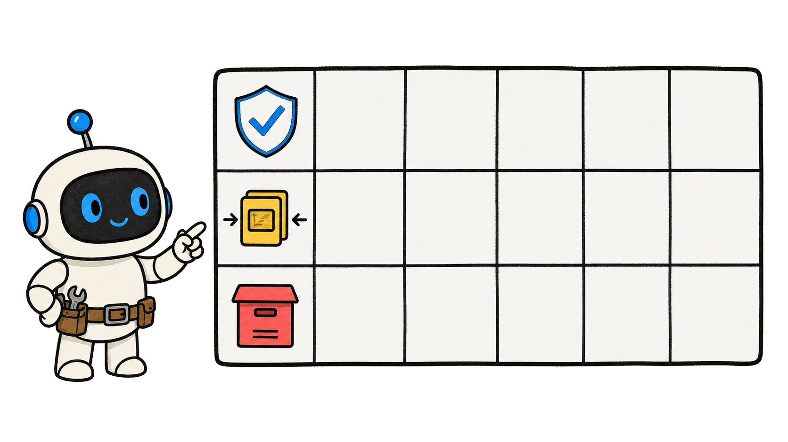
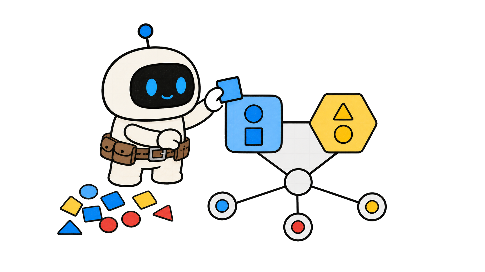

Do you know why an AI Agent gets worse with more memory?
More memory?


Microsoft Research: raw history can bury useful experience

OPENAI Raw logs mix signal and noise
Raw logs mix signal and noise
Raw logs mix signal and noise
An AI Agent can miss the constraint that changes its next action
More context · less focus


Use an AI Agent retain–distill–forget table

≠

Keep · Compress · Retire
Decision-ready memory beats a larger archive

Useful now
Practical, high-value AI Agent methods
Decide better
Chapter 2
Raw History
A complete log is not a usefulprompt

One record can mix decisions, searches, plans, and errors

Differentvaluesame log

Keep history for audit, not by default for every task

Traceable ≠retrieved
Traceable ≠ retrieved
Noise hides the condition that matters now
Find the decision signal
Bigger retrieval can produce slower, weaker reasoning


More textlessprecision
Process history before it reaches the context window
≠

Turn events intoknowledge
Store is not prompt
Two decisions
Decision utility
Store is not prompt
Two decisions
Decision utility
Store is not prompt
Two decisions
Decision utility
Chapter 3
Useful Units
Create reusable knowledge

Shift from text chunks toward structured knowledge


Experience →unit
Facts preserve verified constraints and results
What is trueenough?

Skills preserve repeatable action patterns

When · steps · stop
Facts narrow choices; skills guide work

≠
Truth + procedure
Remove repetition without losing the lesson

Compact reuse
Facts
Skills
One purpose
Facts
Skills
One purpose
Facts
Skills
One purpose
Chapter 4
Task Routing
Retrieve for the task at hand

Route with current goal, entity, risk, and next action
Four cues
Do not retrieve every record with a broad keyword

≠
Topic match is too loose
Select a few facts and skills that change this decision

Task-aligned retrieval
Distill retrieval into concise action guidance

Known · important · check
Live questions still require fresh evidence
Memory is notlive proof
Decision first
Compact context
Fresh source
Decision first
Compact context
Fresh source
Decision first
Compact context
Fresh source
Chapter 5
Memory Lifecycle
Retain, distill, or retire
Retain verified items with future decision value
Reliable +reusable
Reliable + reusable
Distill long events into facts, rules, or handoffs
Keep the lesson
Retire stale, duplicated, or low-confidence active memory

Stop competing for attention
Retiring working memory does not delete audit evidence
Trace remains
Trace remains
Review dates protect against once-correct memories


Conditionschange
Future value
Reusable lesson
Active ≠ deleted
Future value
Reusable lesson
Active ≠ deleted
Future value
Reusable lesson
Active ≠ deleted
Chapter 6
Memory Table
Apply the AI Agent memory tool
Write six fields for every memory candidate

Item · value · state · form · cuedate
Retain a verified constraint that changes permissions
≠

System + action
Distill a repeatable repair into a skill
Triggerstepsevidencestop
Triggerstepsevidencestop
Keep one traceable source; retire duplicates

One evidence path
No next decision value means no permanent working memory

Name the decision
Why save it?
Three states
Stay useful
Why save it?
Three states
Stay useful
Why save it?
Three states
Stay useful
An AI Agent is not wiser because it carries every old message

Memory is notwisdom
Memory is not wisdom
Use facts and skills as action-ready inputs

Useful units
Route from the decision and distill the result

See what matters
Make retain, distill, and forget explicit choices

A reviewable system
Test this design in your own Agent workflow


Evidence, notguarantee

Microsoft Research calls this the raw-history problem: long interaction logs
mix useful experience with details that no longer matter.
Preserve the trace, but turn its decision-relevant parts into reusable
Then the Agent searches a larger pile, spends context on noise, and can miss
knowledge.
the fact or constraint that should change its next action.
This episode gives you an AI Agent retain–distill–forget table: a simple way
to decide what stays available, what becomes a compact lesson, and what
should stop competing for attention.
The goal is not perfect memory.
It is decision-ready memory: the smallest set of facts and skills that helps
an Agent act correctly now.
This video is packed with practical, high-value insights to help you get
better at using AI.
It's a longer one, so follow Tiny Agent and save it so you don't lose it.
Chapter two: Raw History.
Learn why a complete log is not automatically a useful memory.
An interaction record can contain a decision, a failed search, copied text,
an obsolete plan, and a temporary tool error all at once.
Those items deserve different treatment because they answer different future
Keeping that record is valuable for audit and recovery.
questions.
Sending all of it back into every new task is a different decision.
The more irrelevant detail the Agent retrieves, the harder it becomes to
identify the condition that actually changes the current answer.
That is why larger memory can feel like better recall while producing
slower, less reliable reasoning.
Retrieval quality matters more than the visible size of the archive.
Treat history as a source to process, not a bag that must be poured into the
next context window.
Store is not prompt
Store is not prompt
Two decisions
Decision utility
Two decisions
Chapter three: Useful Units.
Turn experience into things an AI Agent can reuse.
The Microsoft Research article describes a shift from storing text chunks
toward structured knowledge.
One useful unit is a fact: a verified constraint, a current setting, or a
result that narrows what the Agent can safely do.
It should also name the scope in which that conclusion remains trustworthy.
Another is a reusable skill: a compact procedure that says when to take an
action, what evidence to collect, and when to stop.
Facts answer what is true enough for this task.
Skills answer how to proceed when the same pattern appears again.
This transformation removes repeated narration without throwing away the
lesson contained in the interaction.
Facts
Facts
Skills
One purpose
Chapter four: Task Routing.
Retrieve only the knowledge that belongs to the task in front of you.
PlugMem uses high-level concepts and inferred intent as routing signals
instead of returning long passages by default.
In practical terms, start with the current goal, the entity, the risk, and
the next action that needs support.
These cues shrink retrieval before the Agent begins comparing evidence.
Use those cues to select a few relevant facts and skills.
Do not retrieve every record that shares a broad keyword.
Before the selected memory reaches the base Agent, distill it into concise
guidance: what is known, what matters, and what must still be checked.
If the answer depends on live information, retrieval is not enough.
The Agent still needs fresh evidence from the appropriate source.
Decision first
Decision first
Compact context
Fresh source
Chapter five: Memory Lifecycle.
Decide whether each item should remain, shrink, or leave the working set.
Retain an item when it is verified, likely to affect future decisions, and
still has a clear retrieval cue.
Distill an item when the event is long but its lesson can be expressed as a
fact, rule, checklist, or handoff note.
A compact lesson should remain understandable without reopening the entire
Forget an item from active memory when it is obsolete, duplicated,
incident.
low-confidence, or only useful as audit history.
Forgetting from the working set is not deleting evidence.
Keep the original trace where governance or debugging requires it.
Review dates matter because a once-correct policy, tool result, or customer
preference can become misleading after conditions change.
Future value
Future value
Reusable lesson
Active ≠ deleted
Active ≠ deleted
Chapter six: Memory Table.
Apply the retain–distill–forget decision before your Agent's next long task.
Give every candidate item six fields: the item, its next-task value, its
state, its compact form, its retrieval cue, and its review date.
This makes a memory decision inspectable instead of hiding it inside a
growing prompt.
If a deployment constraint changes permissions, retain the verified
constraint with the system and action that need it.
If a troubleshooting session reveals a repeatable fix, distill it into a
short skill with a trigger, steps, evidence, and stopping condition.
Keep the form short enough to scan during a live task.
If five transcripts repeat the same discovery, keep one traceable source and
retire the duplicates from active retrieval.
If you cannot name the next decision an item could improve, it probably does
not deserve a permanent place in the Agent's working memory.
Why save it?
Why save it?
Three states
Stay useful
An AI Agent does not become wiser by carrying every past message into every
future task.
Raw history remains useful for audit, but reusable facts and skills are
usually better inputs for action.
Route memory from the current decision, then distill the result until the
Agent can see what matters without reading the whole past.
Use the retain–distill–forget table to make storage, retrieval, and
retirement explicit instead of accidental.
The research result is encouraging, but treat it as evidence for testing
your own memory design, not as a universal performance guarantee.
Review one retained item after the task to see whether it actually improved
the outcome.
Follow Tiny Agent.
Do you know why an
AI Agent can become
less useful after it
remembers more?


Follow Tiny Agent
Tiny Agent helps youget better at using AI.